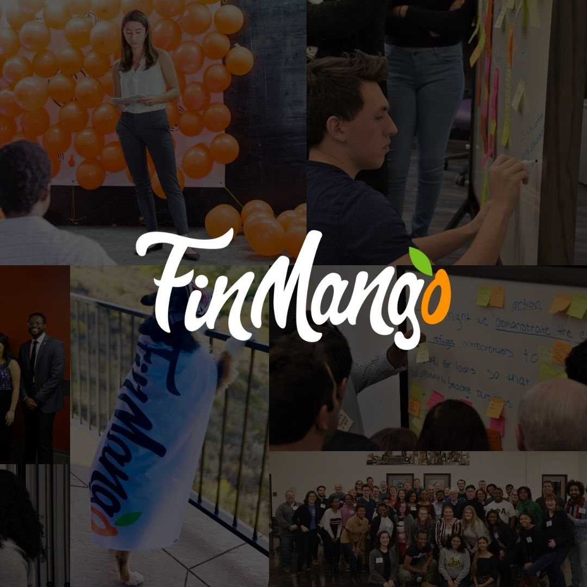

Selected work
All projects →Fresho
Personalized advertising without third-party cookies. Launch and automate campaigns without following anyone around the internet.
Visit Fresho →
FinMango
A global nonprofit building financial health infrastructure for young adults and vulnerable communities. My life's work.
Visit FinMango →Raging Robot Radio
The world's first fully AI-powered DJ radio station, featuring C-3PO's voice. Built to find out what AI does to audio.
Listen in →From Akron to 39 countries.
I grew up in Ohio and didn't get on a plane until I was 23. Since then I've founded a financial health nonprofit, helped Google Health build the most comprehensive open COVID dataset available, given TEDx talks in Togo and Brazil, had my work recognized by the World Bank, and been quoted in The New York Times.
When I'm not building, I'm on the tennis court (I played in college and still film matches as @ScottPlaysTennis), shooting hoops, or off somewhere new.
More about me →